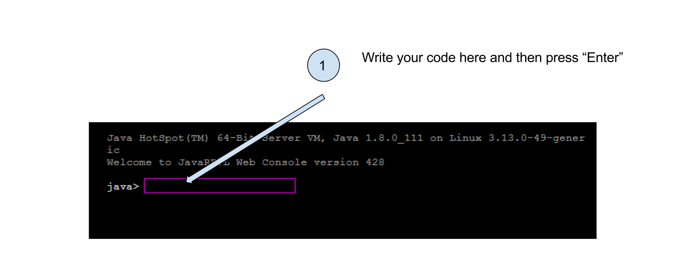
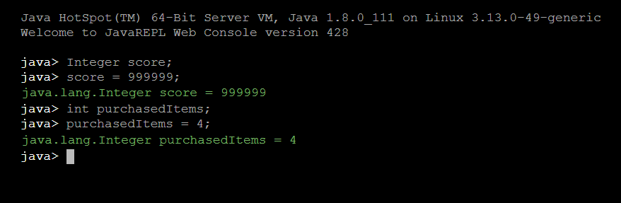
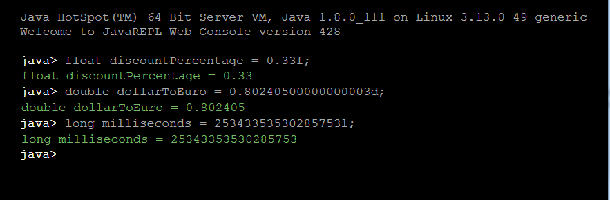

String playerName; (1)
playerName = "Bernard B"; (2)CODAPPS
Essential notions of code
'Escape' or 'o' to see all sides, F11 for full screen, 's' for speaker notes
1. The interactive we are using to learn the basics of code
It is useful to learn about coding by reading a lesson like this one, but it is more efficient if you can practice while you read.
Indeed, a key competency in coding is to learn the simple discipline of writing text carefully:
not forgetting a
;at the end of the linenot forgetting to put a capitalized letter when it is necessary
learning how to spot opening accolades
{and closing accolades}not confusing when to use commas
,and semi-colons;, knowning wen to put double quotes""or not…
It is all very trivial, right?
And yet this is what needs the most practice, at the start.
So in this lesson, you will see plenty of interactive screens like this one:
"Interactive screen" means that you can write directly on it and see your code in action - yes, right here: click next to "java", a cursor will blink to show that you can write:

Figure 1. How to use the interactive tool
Last note before we start: this lesson is on the essentials of coding, so we go fast and discuss just the most important notions of coding.
If you are interested in (much) longer, more thorough approaches, you can have a look at these two interactive courses:
"Think Java" by Tinklet (Java is the same programmming language as the one we use here)
"Python for Everybody" also by Tinklet (Python is the most popular programming language for data science)
1. Variables
If we compare coding to cooking, you could say that variables are the ingredients of the recipe.
→ variables are a way to create, define and store all the information we need in our mobile app.
What kind of information do we need to store?
if you create a gaming app, you might need to store the name of the player, the score, the energy level, etc…
if you create an app selling a service, you might need to store a login name, a password, a list of products and their prices…
As you see, variables can be of different types: text, numbers, numbers with decimals, …
You can create all the kinds of variables you want, but to help you, a number of them are already predefined because they are so common: |
a. String variables: to store text
A variable of type "String" specializes in storing textual information. It is created and defined this way:
Creating a String variable and giving it a value
What does all this mean? Let’s decompose each line:
| 1 | We create the variable (this needs to be done just once) |
| 1 | A value is assigned to the variable (this can be done as many times as we need) |
There is a shortcut if you want to create a variable and give it a value, just in one line of code:
A shortcut
String playerName = "Bernard B";So this single line of code creates a variable called playerName, and I immediately give it a value: Bernard B.
This will be handy when we need to show the player’s name on the screen of the app: we will just use the variable player, and what ever value in it (the player’s name) will be shown.
Your turn!
Create a variable called "favoriteMovie" and store the name of your favorite movie in it
Here is the solution:

Figure 2. Creating a variable for a textual information
b. Integer variables: to store round numbers
A variable of type "Integer" specializes in storing round numbers (like 1, 2, 3…). It is created and defined this way:
Creating an Integer variable and giving it a value
Integer playerAge; (1)
playerAge = 22; (2)Note that we did not put double quotes around 22! Let’s decompose each line:
| 1 | We create the variable (this needs to be done just once) |
| 1 | A value is assigned to the variable (this can be done as many times as we need) |
There is the same shortcut as usual if you want to create a variable and give it a value, just in one line of code:
A shortcut
Integer playerName = 18;So this single line of code creates a variable called playerAge, and I immediately give it a value: 22.
There is another way to use variables for round numbers:
Another way
int playerName = 18;Integer has been replaced by int. Both are the same, except that int takes even less space in the memory of your program.
Your turn!
Create an Integer variable called
scoreand store999999in it.Create a variable called
purchasedItems, usingintinstead ofInteger. Store4in it.
Here is the solution:

Figure 3. Creating 2 variables to store numbers
c. Float, Double and Long variables: to store decimal numbers and big numbers
Variables of type "Float" and "Double" specialize in storing decimal numbers (like 1.4533).
The difference between Float and Double? Double can store even more decimals than Float.
Variable of type "Long" specializes in storing loooong numbers (like 9395353439449039035353). It is useful when you need to count milliseconds, for example.
These are created and defined this way:
Using Float, Double and Long variables
Float averagePrice;
averagePrice = 15.34f; (1)
Double piValue;
piValue = 3.14159265358979323846d; (2)
Long timeOfPlayinMilliSeconds;
timeOfPlayinMilliSeconds = 72585335350535l; (3)Let’s notice a few things:
| 1 | We added the letter f at the end of our number, to signal that this is a Float. |
| 2 | We added the letter d at the end of our number, to signal that this is a Double. |
| 3 | We added the letter l at the end of our number, to signal that this is a Long. |
There is the same shortcut as usual if you want to create a variable and give it a value, just in one line of code:
A shortcut
Float averagePrice = 15.34f;
Double piValue = 3.14159265358979323846d;
Long timeOfPlayinMilliSeconds = 72585335350535l;There is another way to use these types of variables, again for a gain in memory:
Another way
float averagePrice = 15.34f;
double piValue = 3.14159265358979323846d;
long timeOfPlayinMilliSeconds = 72585335350535l;Float is replaced by float, Double is replaced by double, and Long is replaced by long.
This looks like just a small change, but the smaller cap version takes even less space in the memory of your program.
Your turn!
Create a variable called
discountPercentageand store0.33in it.Create a variable called
dollarToEuro, usingdouble. Store0.80240500000000003in it.Create a variable called
milliseconds, usinglong. Store25343353530285753in it.
Here is the solution:

Figure 4. Creating 3 variables to store decimal or long numbers
d. Boolean variables: to store true / false information
If you have never programmed before, this type of variable might be surprising to you.
Why do we need a type of variable that would just store 2 possible values: true or false?
After all, we could just use a String type of variable for that:
Using a String variable to store a "true" value
String customerLoggedIn = "true";
String customerSubscribedToNewsletter= "false";That would work very well, but in practice these true / false values are so common that a special type of variable called Boolean has been created just for them:
Using Boolean variables
Boolean hasSuperPowers = true;
Boolean isAClubMember = false;Let’s notice that we did not put double quotes around the value true or false.
Just like before, there is another way to use these type of variables, again for a gain in memory:
Another way
boolean hasSuperPowers = true;
boolean isAClubMember = false;Notice that Boolean has been replaced by boolean.
Your turn!
Create a variable called
isPremiumMemberand store atruevalue in it.Create a variable called
isReturningVisitorand store afalsevalue in it
Here is the solution:

Figure 5. Creating 3 variables to store true false values
The end
Questions? Want to open a discussion on this lesson? Visit the forum here (need a free Github account).
Find references for this lesson, and other lessons, here.
Licence: Creative Commons, Attribution 4.0 International (CC BY 4.0). You are free to:
copy and redistribute the material in any medium or format
Adapt — remix, transform, and build upon the material
⇒ for any purpose, even commercially.
 This course is designed by Clement Levallois.
This course is designed by Clement Levallois.
Discover my other courses in data / tech for business: http://www.clementlevallois.net
Or get in touch via Twitter: @seinecle